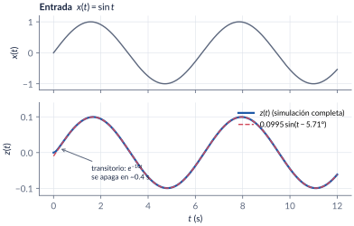
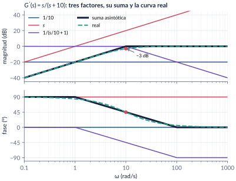
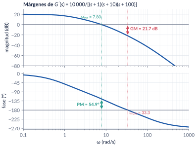
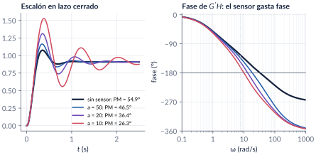
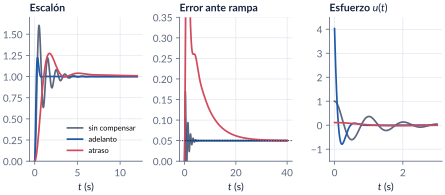

10. Respuesta frecuencial y diagramas de Bode
Semanas 13 a 16 · cuatro clases · página piloto del formato nuevo
Hasta ahora analizamos los sistemas mirando dónde están los polos. En esta parte cambiamos la pregunta: ¿qué le hace el sistema a una senoide? La respuesta son dos números por frecuencia, que se pueden medir en el laboratorio aunque no se tenga el modelo, y con ellos dibujados en una sola gráfica, el diagrama de Bode, vamos a responder las tres preguntas del curso (estabilidad, transitorio y error) y a diseñar compensadores.
Al terminar esta parte usted podrá
- Explicar por qué un sistema lineal y estable responde a una senoide con otra senoide, y calcular su amplitud y su fase.
- Dibujar a mano el Bode asintótico de una malla abierta con ganancia, integradores y polos y ceros reales, y estimar cuánto se equivoca.
- Leer los márgenes de ganancia y de fase, decidir si el lazo cerrado es estable y cuánta ganancia admite.
- Predecir sobrepico, velocidad y error del lazo cerrado mirando solo la malla abierta.
- Diseñar un controlador proporcional, un adelanto, un atraso o un atraso-adelanto, y verificarlo en MATLAB/Simulink.
Ruta de las cuatro clases
| Clase | Qué se ve | Handout | Scripts | Videos |
|---|---|---|---|---|
| 1 | Historia, malla abierta y lazo abierto, la senoide, el decibel, los cuatro factores, el ejemplo \(s/(s+10)\) | §10.1–10.5 | C1_* |
V1, V2, V10, V11 |
| 2 | Leer un Bode al revés, márgenes, el sensor lento, rango de \(\Kc\), Ziegler-Nichols | §10.6–10.7 | C2_* |
V3, V4, V12 |
| 3 | \(\Mr\) y \(\wbw\), \(\PM\leftrightarrow\zeta\), tipo y error, ajuste de ganancia | §10.8–10.10 | C3_* |
V5, V6 |
| 4 | Adelanto, atraso, atraso-adelanto, redes RC, el PID visto en frecuencia | §10.11–10.12 | C4_* |
V7, V8 |
Lo esencial, en una página
Respuesta en frecuencia
Un sistema lineal, invariante y estable excitado con \(x_0\sin\omega t\) responde en estado estacionario con \[ z_{ss}(t)=x_0\,|\Gma(\jw)|\,\sin\big(\omega t+\angle \Gma(\jw)\big). \] El diagrama de Bode guarda esos dos números, \(20\log|\Gma(\jw)|\) y \(\angle\Gma(\jw)\), para cada \(\omega\).

La trampa clásica: la ganancia escondida
Las reglas asintóticas solo valen con cada factor escrito como \(s/\omega_1+1\). Como \(s+10=10\,(s/10+1)\), el factor \(1/(s+10)\) trae \(1/10=-20\dB\) escondidos. Es el error más frecuente en las evaluaciones.
Diagrama de Bode asintótico, paso a paso
- Llevar \(\Gma(s)\) a la forma de Bode: cada factor como \((s/\omega_i+1)\) y la ganancia \(\Kb\) sola.
- Ordenar las esquinas de menor a mayor.
- Magnitud: arrancar con \(20\log\Kb-20N\log\omega\) y sumar \(+20\dBdec\) por cada cero y \(-20\) por cada polo.
- Fase: \(\pm45^\circ\)/década entre \(\omega_i/10\) y \(10\,\omega_i\) por cada factor real, \(-90N^\circ\) por los integradores.
- Verificar con
bode. Con polos complejos y \(\zeta\) pequeño, la curva real puede estar muy por encima de la asíntota.

Márgenes de ganancia y de fase
La frontera de estabilidad es \(\Gma(\jw)=-1\): magnitud \(0\dB\) y fase \(-180^\circ\) a la vez.
- \(\GM=-20\log|\Gma(\jw_{GM})|\), medido donde la fase vale \(-180^\circ\): cuánta ganancia de más aguanta el lazo.
- \(\PM=180^\circ+\angle\Gma(\jw_{PM})\), medido donde \(|\Gma|=0\dB\): cuánto atraso de fase no modelado aguanta.
Regla práctica (fase mínima): \(30^\circ<\PM<60^\circ\) y \(\GM>6\dB\).

El PM es un presupuesto de fase
Un sensor de primer orden \(a/(s+a)\) que nadie modeló resta cerca de \(\tan^{-1}(\wpm/a)\) de fase en el cruce. Con el lazo anterior: \(a=50\) deja \(\PM=46.5^\circ\) (sobrepico 28 %); \(a=10\), \(26.3^\circ\) (68 %). La planta es la misma; lo que cambió fue cuánto presupuesto quedó.

Del margen de fase al transitorio
Para la malla abierta \(\wn^2/[s(s+2\zeta\wn)]\) el margen de fase depende solo de \(\zeta\): \[ \PM=\tan^{-1}\frac{2\zeta}{\sqrt{-2\zeta^2+\sqrt{1+4\zeta^4}}}\qquad(\PM\approx100\,\zeta\ \text{si}\ \zeta<0.6). \]
| \(\zeta\) | 0.25 | 0.40 | 0.50 | 0.60 | 0.707 |
|---|---|---|---|---|---|
| \(\PM\) | \(28.0^\circ\) | \(43.1^\circ\) | \(51.8^\circ\) | \(59.2^\circ\) | \(65.5^\circ\) |
| \(\OS\) | 44.4 % | 25.4 % | 16.3 % | 9.5 % | 4.3 % |
Diseño: primero el error, después la forma
- \(\Kc\): la ganancia DC más pequeña que cumple el error (\(\kp\), \(\kv\) o \(\ka\) se leen en las bajas frecuencias).
- Términos con \(G_c'(0)=1\) para cambiar la forma en el cruce: un adelanto agrega fase (más rápido, más ruido); un atraso atenúa (más lento, menos esfuerzo); un atraso-adelanto, ambas cosas.
- Verificar con
marginy en el tiempo.
| cruce (rad/s) | \(\PM\) | \(\OS\) | \(\ts\) (s) | \(\wbw\) (rad/s) | \(u(0^+)\) | |
|---|---|---|---|---|---|---|
| sin compensar | 6.17 | \(18.0^\circ\) | 60 % | 3.7 | 9.8 | 1 |
| adelanto | 8.85 | \(49.8^\circ\) | 22 % | 0.6 | 14.5 | 4.03 |
| atraso | 1.68 | \(44.8^\circ\) | 27 % | 7.1 | 2.8 | 0.11 |

Explorador de Bode
Mueva la ganancia, los integradores, los polos y el cero. La curva negra es el asintótico que usted dibujaría a mano y la verde, la real; abajo aparecen los márgenes y lo que ellos predicen para el lazo cerrado con retroalimentación unitaria. Intente reproducir los ejemplos del handout.
Retos con el explorador
- Con los valores iniciales (\(K=10\,000\), polos en 1, 10 y 100) lea los márgenes y compárelos con el ejemplo 10.5 del handout.
- Suba \(K\) hasta que el GM llegue a 0 dB. ¿Qué valor de \(K\) obtuvo? Compárelo con \(\Kcr=122\,210\) (Routh-Hurwitz).
- Ponga un integrador, quite el polo en 1 y busque el \(K\) que da \(\PM\approx52^\circ\) con el polo en 10 (el ejemplo \(100/[s(s+10)]\)).
Códigos de esta parte
Los bloques salen directamente de los archivos del repositorio. Ejecute antes iniciarCurso. Cada script tiene un encabezado con qué hace, qué observar, los resultados esperados y una sugerencia para explorar.
La senoide (handout §10.2). Simulación completa contra la predicción de estado estacionario.
% No se encontró ../../codigo/cap10_respuesta_frecuencial/Clase1_RespuestaFrecuencial/C1_Ej1_RespuestaSenoidal.mEl ejemplo \(s/(s+10)\) (§10.5). Los tres factores con la función del curso bodeAsintotico.
% No se encontró ../../codigo/cap10_respuesta_frecuencial/Clase1_RespuestaFrecuencial/C1_Ej2_Asintotico_s_s10.mLa asíntota que engaña (§10.4).
% No se encontró ../../codigo/cap10_respuesta_frecuencial/Clase1_RespuestaFrecuencial/C1_Ej3_SegundoOrden.mMárgenes (§10.7). Ojo con los nombres de margin.
% No se encontró ../../codigo/cap10_respuesta_frecuencial/Clase2_Margenes/C2_Ej2_Margenes.mRango de \(\Kc\) con Routh-Hurwitz, sin Symbolic Toolbox.
% No se encontró ../../codigo/cap10_respuesta_frecuencial/Clase2_Margenes/C2_Ej3_RangoKc.mEl sensor lento.
% No se encontró ../../codigo/cap10_respuesta_frecuencial/Clase2_Margenes/C2_Video_SensorMargenFase.mDel PM al transitorio (§10.8).
% No se encontró ../../codigo/cap10_respuesta_frecuencial/Clase3_LazoCerrado/C3_Ej1_PM_zeta.mAjuste de ganancia (§10.10).
% No se encontró ../../codigo/cap10_respuesta_frecuencial/Clase3_LazoCerrado/C3_Ej3_AjusteGanancia.mLos siete pasos del adelanto como función (§10.11).
% No se encontró ../../codigo/cap10_respuesta_frecuencial/Clase4_Compensadores/disenoAdelanto.mAtraso-adelanto.
% No se encontró ../../codigo/cap10_respuesta_frecuencial/Clase4_Compensadores/C4_Ej4_AtrasoAdelanto.mPID por moldeo del lazo (§10.12).
% No se encontró ../../codigo/cap10_respuesta_frecuencial/Clase4_Compensadores/C4_Ej5_PID_Frecuencia.mverificarCap10 comprueba los números clave del capítulo. Córralo cada vez que modifique un código.
% No se encontró ../../codigo/cap10_respuesta_frecuencial/verificarCap10.mModelos de Simulink
Los modelos se construyen por código
| Script | Modelo | Para qué |
|---|---|---|
crearModelo_RespuestaSenoidal.m |
Sine Wave → \(G(s)\) → Scope | medir el Bode un punto a la vez; mide amplitud y desfase automáticamente |
crearModelo_LazoKc.m |
lazo con \(\Kc\) y planta de tercer orden | ver la oscilación sostenida en \(\Kc=\Kcr\) |
crearModelo_Compensadores.m |
tres lazos en paralelo con selector escalón/rampa | comparar sin compensar, adelanto y atraso: salidas y esfuerzos |
Corra el script y se crea el .slx. Así cualquiera puede ver, versionar y mejorar exactamente qué bloques tiene cada modelo.
Pausas activas
1. ¿Más grande o más pequeña?
Si la entrada de \(1/(s+10)\) fuera \(\sin(100t)\) en lugar de \(\sin t\), ¿la salida sería más grande o más pequeña? ¿Más o menos atrasada?
Respuesta
Más pequeña y más atrasada: \(|G(j100)|=0.00995\) y \(\phi=-84.3^\circ\).2. Tres lazos
- \(\PM=40^\circ\), \(\GM=12\dB\); (B) \(\PM=-15^\circ\), \(\GM=-4\dB\); (C) \(\PM=70^\circ\), \(\GM=2\dB\). ¿Cuáles son estables? ¿Cuál le preocupa más?
Respuesta
A es estable con márgenes cómodos; B es inestable; C es estable pero frágil: un 26 % más de ganancia lo inestabiliza. Hay que mirar los dos márgenes.3. El tipo 2
¿Por qué en un sistema tipo 2 la asíntota de baja frecuencia cruza \(0\dB\) en \(\sqrt{\ka}\) y no en \(\ka\)?
Respuesta
En bajas frecuencias \(|\Gma(\jw)|\approx\ka/\omega^2\); igualando a 1, \(\omega=\sqrt{\ka}\).Problemas
El handout trae 17 problemas, desde el diagrama asintótico hasta el diseño de un atraso-adelanto, con soluciones de los seis primeros. Los marcados [M] se resuelven en MATLAB/Simulink.
Correcciones respecto a la versión anterior
Adelanto: \(\omega_M=8.85\) (no 14). Atraso: con la holgura de \(5^\circ\), \(\omega=1.68\) y \(\PM=44.8^\circ\). Rango de \(\Kc\): \(\GM=+40\dB\) (no \(-40\)). \(\omega_{GM}\) asintótico del ejemplo \(10\,000/[\cdots]\): 31.6 (no 50). Ajuste de ganancia: \(\Kc=33\,056\). El pico de resonancia se llama ahora \(\Mr\) (antes \(M_P\)). Todos los números se verificaron de forma independiente.